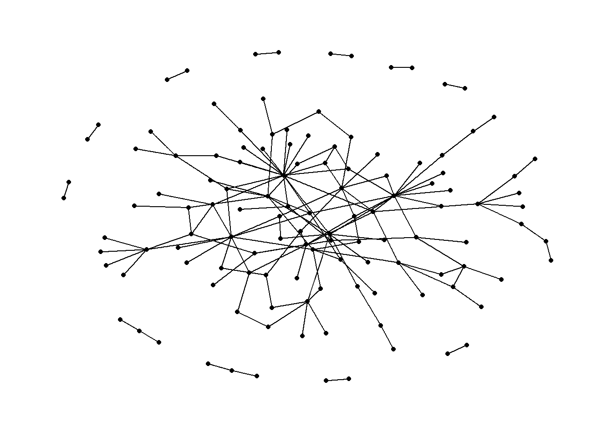

pacman::p_load(jsonlite, tidygraph, ggraph, visNetwork, lubridate, tidyverse)Take-home Exercise 2: Kick-starter 1: Building Network Data Models
Declaimer
This document aims to provide you guidance on how to get started with Takehome Exercise 2, especially how to prepare the network data. It is not a model answer.
Getting Started
The code chunk below will be used to install and load the necessary R packages to meet the data preparation, data wrangling, data analysis and visualisation needs.
Data Import
In the code chunk below, fromJSON() of jsonlite package is used to import mc2_challenge_graph.json into R environment.
mc2_data <- fromJSON("data/mc2_challenge_graph.json")Examine the list object created by using RStudio, especially nodes and links data tables.
Data Wrangling
Extracting the nodes
The code chunk is used to extract nodes data table from mc2_data list object and save the output in a tibble data frame object called mc2_nodes.
mc2_nodes <- as_tibble(mc2_data$nodes) %>%
select(id, shpcountry, rcvcountry)
Thing to learn
select()is used not only to select the field needed but also to re-organise the sequent of the fields.
Extracting the edges
The code chunk is used to extract edgess data table from mc2_data list object and save the output in a tibble data frame object called mc2_edges.
mc2_edges <- as_tibble(mc2_data$links) %>%
mutate(ArrivalDate = ymd(arrivaldate)) %>%
mutate(Year = year(ArrivalDate)) %>%
select(source, target, ArrivalDate, Year, hscode, valueofgoods_omu,
volumeteu, weightkg, valueofgoodsusd) %>%
distinct()
Things to learn
mutate()is used two times to create two derive fields.ymd()of lubridate package is used to covert arrivaldate field from character data type into date data type.year()of lubridate package is used to convert the values in ArrivalDate field into year values.
select()is used not only to select the field needed but also to re-organise the sequent of the fields.
Preparing edges data table
Things to learn from the code chunk below
filter()is used to select records whereby hscode is equal 306170 and Year is equal to 2028.group_by()is used to aggregate values by source, target, hscode, Year.summarise()andn()are used to count the aggregated records.- filter() is then used to perform two selections
- to select all records whereby source are not equal to target, and
- to select all records whereby the values of their weights field are greater than 20
mc2_edges_aggregated <- mc2_edges %>%
filter(hscode == "306170" & Year == "2028") %>%
group_by(source, target, hscode, Year) %>%
summarise(weights = n()) %>%
filter(source!=target) %>%
filter(weights > 20) %>%
ungroup()Preparing nodes data
Instead of using the nodes data table extracted from mc2_data, we will prepare a new nodes data table by using the source and target fields of mc2_edges_aggregated data table. This is necessary to ensure that the nodes in nodes data tables include all the source and target values.
id1 <- mc2_edges_aggregated %>%
select(source) %>%
rename(id = source)
id2 <- mc2_edges_aggregated %>%
select(target) %>%
rename(id = target)
mc2_nodes_extracted <- rbind(id1, id2) %>%
distinct()Building the tidy graph data model
The code chunk below is then used to build the tidy graph data model.
mc2_graph <- tbl_graph(nodes = mc2_nodes_extracted,
edges = mc2_edges_aggregated,
directed = TRUE)Visualising the network graph with ggraph
In order to check if the tidygraph model has been prepared correctly, we can use selected functions of ggraph package to plot a simple network graph as shown below.
ggraph(mc2_graph,
layout = "fr") +
geom_edge_link(aes()) +
geom_node_point(aes()) +
theme_graph()
Exporting data objects
Code chunk below will be used to export the data objects prepared in previous section into rds format for subsequent use.
write_rds(mc2_nodes_extracted, "data/mc2_nodes_extracted.rds")
write_rds(mc2_edges_aggregated, "data/mc2_edges_aggregated.rds")
write_rds(mc2_graph, "data/mc2_graph.rds")Preparing Network Data for visNetwork
Instead of plotting static network graph, we can plot interactive network graph by using visNetwork package. Before we can plot a interactive network graph by using visNetwork package, we are required to prepare two tibble data frames, one for the nodes and the other one for the edges.
Preparing edges tibble data frame
In this example, we assume that you already have created a tidygraph model look similar to the print below.
mc2_graph# A tbl_graph: 123 nodes and 146 edges
#
# A directed acyclic simple graph with 12 components
#
# A tibble: 123 × 1
id
<chr>
1 1 Ltd. Liability Co Cargo
2 Adriatic Catch Ltd. Liability Co Transportation
3 Adriatic Tuna AS Solutions
4 Amerigo Dockyard S.p.A. Distribution
5 Aqua Adventures Carriers Seabed
6 Aqua Azul LC International
# ℹ 117 more rows
#
# A tibble: 146 × 5
from to hscode Year weights
<int> <int> <chr> <dbl> <int>
1 1 74 306170 2028 68
2 2 75 306170 2028 30
3 3 76 306170 2028 22
# ℹ 143 more rowsNote that tidygraph model is in R list format. The code chunk below will be used to extract and convert the edges into a tibble data frame.
edges_df <- mc2_graph %>%
activate(edges) %>%
as.tibble()Things to learn from the code chunk above
activate()is used to make the edges of mc2_graph1 active. This is necessary in order to extract the correct compontent from the list object.as.tibble()is used to convert the edges list into tibble data frame.
Important
You might be curious to ask why don’t we used mc2_edges, the tibble data frame extracted in the earlier section. If you compare the data structure of both data frames, you will notice the first two field names in edges_df are called from and to instead of source and target. This is conformed to the nodes data structure of igraph object. Also note that the data type of from and to are in numeric data type and not in character data type.
Preparing nodes tibble data frame
In this section, we will prepare a nodes tibble data frame by using the code chunk below.
nodes_df <- mc2_graph %>%
activate(nodes) %>%
as.tibble() %>%
rename(label = id) %>%
mutate(id=row_number()) %>%
select(id, label)
Things to learn from the code chunk above
activate()is used to make the edges of mc2_graph1 active. This is necessary in order to extract the correct compontent from the list object.as.tibble()is used to convert the edges list into tibble data frame.rename()is used to rename the field name id to label.mutate()is used to create a new field called id androw_number()is used to assign the row number into id values.select()is used to re-organised the field name. This is because visNerwork is expecting the first field is called id and the second field is called label.
Important
- visNetowrk is expecting a field called id in the tibble data frame. The field must be in numeric data type and it must unique to the values in the from and to field of edges_df.
Plotting a simple interactive network graph
To ensure that the tibble data frames are confirmed to the requirements of visNetwork, we will plot a simple interactive graph by using the code chunk below.
visNetwork(nodes_df,
edges_df) %>%
visIgraphLayout(layout = "layout_with_fr") %>%
visEdges(arrows = "to",
smooth = list(enabled = TRUE,
type = "curvedCW"))